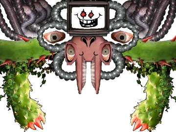

HOME/ |
FRISK/ |
BOSSES/ |
AÇÕES/ |
CRIADOR |

FLOWEY
Flowey é a primeira criatura encontrada por Frisk e rapidamente revela sua personalidade cruel e manipuladora. Mais tarde, descobre-se que ele é Asriel Dreemurr sem alma. Após absorver as seis Almas Humanas, transforma-se em Ômega Flowey, uma criatura extremamente poderosa que controla a realidade. Com a ajuda das Almas Humanas, Frisk consegue derrotá-lo, fazendo-o retornar à sua forma original.
TEMA DA BATALHA
VOLTAR

História detalhada
Flowey surgiu após um experimento realizado por Alphys utilizando a Determinação presente no corpo de Asriel Dreemurr. Sem uma alma, ele renasceu como uma flor incapaz de sentir amor, compaixão ou empatia. Com o poder de salvar e carregar o tempo, passou incontáveis ciclos repetindo acontecimentos e manipulando todos ao seu redor até perder o interesse pela vida.
Quando Frisk cai no Subterrâneo, Flowey tenta enganá-lo fingindo ser amigável, mas logo demonstra suas verdadeiras intenções. Durante toda a jornada, ele observa as escolhas do protagonista e interfere em diversos momentos, esperando encontrar uma forma de alcançar ainda mais poder.
No final da Rota Neutra, Flowey reúne as seis Almas Humanas coletadas por Asgore e as absorve, transformando-se em Ômega Flowey. Nessa forma monstruosa, ele distorce a realidade, controla o tempo e aprisiona Frisk em uma batalha caótica, acreditando ser invencível.
Apesar de seu enorme poder, as Almas Humanas conseguem resistir ao seu controle e ajudam Frisk durante o combate. Com a força das almas, Flowey é derrotado e perde sua transformação, voltando à forma de uma simples flor.
Na Rota Pacifista Verdadeira, Flowey revela que, antes de se tornar uma flor, era Asriel Dreemurr. Ao recuperar temporariamente sua verdadeira forma, ele compreende o valor do amor e da amizade, liberta todas as almas absorvidas e quebra a barreira que prendia os monstros no Subterrâneo. Em seguida, aceita seu destino e se despede de Frisk, permitindo que todos tenham um novo começo.